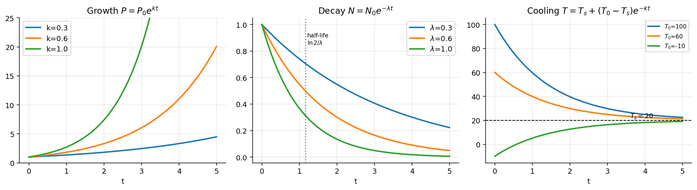

Differential Equations · First-Order ODEs · 1 min read
Applications of First Order ODEs
Related: Particular Solution and IVP
Many scientific phenomena are naturally described by first-order differential equations.
Population Growth
Suppose denotes the population at time . If the rate of growth is proportional to the population,
where is the growth constant. The solution is
Radioactive Decay
If the decay rate is proportional to the remaining quantity,
The solution is
Newton's Law of Cooling
Let denote the temperature of an object. Newton's law states
where denotes the surrounding temperature. The solution is
Visual

Figure: Exponential growth, radioactive decay (with its half-life ), and Newton's cooling, where every temperature curve relaxes to the ambient with the same time constant .Next: Isoclines
Cross-domain links
- Exponential Decay - Time Constants, Damping and Spatial Relaxation — the decay half of across circuits, structures and thermal systems.
- Heat Transfer - MOC — Newton's law of cooling is the same ODE.
- Assignment 8.1 - Six Ds Analysis of Ather Energy — compound growth (Ather revenue about 89% a year over FY20–FY26) is read as an annual rate.
- Machine Learning Formula Sheet — Theory and Intuition — gradient descent is the explicit Euler method on the gradient flow (items 19–20).
See also
- Linear Differential Equations — the integrating-factor solution of .